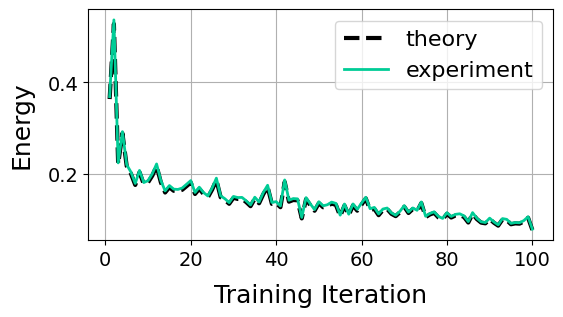

Theoretical tools¤
JPC provides the following main theoretical tools that can be used to study deep linear networks (DLNs) trained with PC:
- jpc.linear_equilib_energy() to compute the theoretical PC energy at the solution of the activities for DLNs;
- jpc.compute_linear_activity_hessian() to compute the theoretical Hessian of the energy with respect to the activities of DLNs;
- jpc.compute_linear_activity_solution() to compute the analytical PC inference solution for DLNs.
jpc.linear_equilib_energy(params: typing.Tuple[jaxtyping.PyTree[typing.Callable], typing.Optional[jaxtyping.PyTree[typing.Callable]]], x: typing.Union[jax.Array, numpy.ndarray, numpy.bool, numpy.number, bool, int, float, complex], y: typing.Union[jax.Array, numpy.ndarray, numpy.bool, numpy.number, bool, int, float, complex], *, param_type: str = 'sp', gamma: typing.Optional[jaxtyping.Shaped[Array, '']] = None, return_rescaling: bool = False) -> typing.Union[jax.Array, typing.Tuple[jax.Array, jax.Array]]
¤
Computes the theoretical PC energy at the solution of the activities for a deep linear network (Innocenti et al. 2024):
where \(\mathbf{S} = \mathbf{I}_{d_y} + \sum_{\ell=2}^L (\mathbf{W}_{L:\ell})(\mathbf{W}_{L:\ell})^T\) and \(\mathbf{W}_{k:\ell} = \mathbf{W}_k \dots \mathbf{W}_\ell\) for \(\ell, k \in 1,\dots, L\).
Note
This expression assumes no biases. It could also be generalised to
other network architectures (e.g. ResNets) and parameterisations
(see Innocenti et al. 2025).
However, note that the equilibrated energy for ResNets and other
parameterisations can still be computed by getting the activity solution
with jpc.compute_linear_activity_solution()
and then plugging this into the standard PC energy
jpc.pc_energy_fn().
Example
In practice, this means that if you run, at any point in training, the
inference dynamics of any PC linear network to equilibrium, then
jpc.pc_energy_fn()
will return the same energy value as this function. For a demonstration, see
this example notebook.

Reference
@article{innocenti2025only,
title={Only Strict Saddles in the Energy Landscape of Predictive Coding Networks?},
author={Innocenti, Francesco and Achour, El Mehdi and Singh, Ryan and Buckley, Christopher L},
journal={Advances in Neural Information Processing Systems},
volume={37},
pages={53649--53683},
year={2025}
}
Main arguments:
params: Tuple with callable network layers and optional skip connections.x: Network input.y: Network output.
Other arguments:
param_type: Determines the parameterisation. Options are"sp"(standard parameterisation),"mupc"(μPC), or"ntp"(neural tangent parameterisation). See_get_param_scalings()for the specific scalings of these different parameterisations. Defaults to"sp".gamma: Optional scaling factor for the output layer. If provided, the output layer scaling is multiplied by1/gamma. Defaults toNone(no additional scaling).return_rescaling: IfTrue, also returns the rescaling matrixS. Defaults toFalse.
Returns:
Mean total theoretical energy over a data batch and optionally the rescaling
matrix S.
jpc.compute_linear_equilib_energy_grads(params: typing.Tuple[jaxtyping.PyTree[typing.Callable], typing.Optional[jaxtyping.PyTree[typing.Callable]]], x: typing.Union[jax.Array, numpy.ndarray, numpy.bool, numpy.number, bool, int, float, complex], y: typing.Union[jax.Array, numpy.ndarray, numpy.bool, numpy.number, bool, int, float, complex], *, param_type: str = 'sp', gamma: typing.Optional[jaxtyping.Shaped[Array, '']] = None) -> PyTree[jax.Array]
¤
Computes the gradient of the linear equilibrium energy with respect to model parameters \(∇_θ \mathcal{F}^*\).
Main arguments:
params: Tuple with callable model layers and optional skip connections.x: Network input.y: Network output.
Other arguments:
param_type: Determines the parameterisation. Options are"sp"(standard parameterisation),"mupc"(μPC), or"ntp"(neural tangent parameterisation). See_get_param_scalings()for the specific scalings of these different parameterisations. Defaults to"sp".gamma: Optional scaling factor for the output layer. If provided, the output layer scaling is multiplied by1/gamma. Defaults toNone(no additional scaling).
Returns:
Parameter gradients for the network.
jpc.update_linear_equilib_energy_params(params: typing.Tuple[jaxtyping.PyTree[typing.Callable], typing.Optional[jaxtyping.PyTree[typing.Callable]]], optim: optax._src.base.GradientTransformation | optax._src.base.GradientTransformationExtraArgs, opt_state: typing.Union[jax.Array, numpy.ndarray, numpy.bool, numpy.number, typing.Iterable[ForwardRef(ArrayTree)], typing.Mapping[typing.Any, ForwardRef(ArrayTree)]], x: typing.Union[jax.Array, numpy.ndarray, numpy.bool, numpy.number, bool, int, float, complex], y: typing.Union[jax.Array, numpy.ndarray, numpy.bool, numpy.number, bool, int, float, complex], *, param_type: str = 'sp', gamma: typing.Optional[jaxtyping.Shaped[Array, '']] = None) -> typing.Dict
¤
Updates parameters of a linear network by taking gradients of the linear equilibrium energy with a given optax optimiser.
Main arguments:
params: Tuple with callable model layers and optional skip connections.optim: optax optimiser, e.g.optax.sgd().opt_state: State of optax optimiser.x: Network input.y: Network output.
Other arguments:
param_type: Determines the parameterisation. Options are"sp"(standard parameterisation),"mupc"(μPC), or"ntp"(neural tangent parameterisation). See_get_param_scalings()for the specific scalings of these different parameterisations. Defaults to"sp".gamma: Optional scaling factor for the output layer. If provided, the output layer scaling is multiplied by1/gamma. Defaults toNone(no additional scaling).
Returns:
Dictionary with updated model, parameter gradients, and optimiser state.
jpc.compute_linear_activity_hessian(Ws: PyTree[jax.Array], *, use_skips: bool = False, param_type: str = 'sp', activity_decay: bool = False, diag: bool = True, off_diag: bool = True, gamma: typing.Optional[jaxtyping.Shaped[Array, '']] = None) -> Array
¤
Computes the theoretical Hessian matrix of the PC energy with respect to the activities for a linear network, \((\mathbf{H}_{\mathbf{z}})_{\ell k} := \partial^2 \mathcal{F} / \partial \mathbf{z}_\ell \partial \mathbf{z}_k \in \mathbb{R}^{(NH)×(NH)}\) where \(N\) and \(H\) are the width and number of hidden layers, respectively (Innocenti et al., 2025).
Info
This function can be used (i) to study the inference landscape of linear
PC networks and (ii) to compute the analytical solution with
jpc.compute_linear_activity_solution().
Warning
This was highly hard-coded for quick experimental iteration with different models and parameterisations. The computation of the blocks could be implemented much more elegantly by fetching the transformation for each layer.
Reference
@article{innocenti2025mu,
title={$$ackslash$mu $ PC: Scaling Predictive Coding to 100+ Layer Networks},
author={Innocenti, Francesco and Achour, El Mehdi and Buckley, Christopher L},
journal={arXiv preprint arXiv:2505.13124},
year={2025}
}
Main arguments:
Ws: List of all the network weight matrices.
Other arguments:
use_skips: Whether to assume one-layer skip connections at every layer except from the input and to the output.Falseby default.param_type: Determines the parameterisation. Options are"sp"(standard parameterisation),"mupc"(μPC), or"ntp"(neural tangent parameterisation). See_get_param_scalings()for the specific scalings of these different parameterisations. Defaults to"sp".activity_decay: \(\ell^2\) regulariser for the activities.diag: Whether to compute the diagonal blocks of the Hessian.off-diag: Whether to compute the off-diagonal blocks of the Hessian.gamma: Optional scaling factor for the output layer. If provided, the output layer scaling is multiplied by1/gamma. Defaults toNone(no additional scaling).
Returns:
The activity Hessian matrix of size \(NH×NH\) where \(N\) is the width and \(H\) is the number of hidden layers.
jpc.compute_linear_activity_solution(model: PyTree[equinox.nn._linear.Linear], x: typing.Union[jax.Array, numpy.ndarray, numpy.bool, numpy.number, bool, int, float, complex], y: typing.Union[jax.Array, numpy.ndarray, numpy.bool, numpy.number, bool, int, float, complex], *, use_skips: bool = False, param_type: str = 'sp', activity_decay: bool = False, gamma: typing.Optional[jaxtyping.Shaped[Array, '']] = None, epsilon: Shaped[Array, ''] = 0.0, hessian: typing.Optional[jax.Array] = None) -> PyTree[jax.Array]
¤
Computes the theoretical solution for the PC activities of a linear network (Innocenti et al., 2025).
where \((\mathbf{H}_{\mathbf{z}})_{\ell k} := \partial^2 \mathcal{F} / \partial \mathbf{z}_\ell \partial \mathbf{z}_k \in \mathbb{R}^{(NH)×(NH)}\)
is the Hessian of the energy with respect to the activities, and
\(\mathbf{b} \in \mathbb{R}^{NH}\) is a sparse vector depending only on the
data and associated weights. The activity Hessian is computed analytically
using jpc.compute_linear_activity_hessian().
Info
This can be used to study how linear PC networks learn when they perform perfect inference.
Reference
@article{innocenti2025mu,
title={$$ackslash$mu $ PC: Scaling Predictive Coding to 100+ Layer Networks},
author={Innocenti, Francesco and Achour, El Mehdi and Buckley, Christopher L},
journal={arXiv preprint arXiv:2505.13124},
year={2025}
}
Main arguments:
model: Linear network defined as a list of Equinox Linear layers.x: Network input.y: Network output.
Other arguments:
use_skips: Whether to assume one-layer skip connections at every layer except from the input and to the output.Falseby default.param_type: Determines the parameterisation. Options are"sp"(standard parameterisation),"mupc"(μPC), or"ntp"(neural tangent parameterisation). See_get_param_scalings()for the specific scalings of these different parameterisations. Defaults to"sp".activity_decay: \(\ell^2\) regulariser for the activities.gamma: Optional scaling factor for the output layer. If provided, the output layer scaling is multiplied by1/gamma. Defaults toNone(no additional scaling).epsilon: Small regularization value added to the diagonal of the Hessian matrix before inversion to improve numerical stability. Defaults to0..hessian: Optional Hessian matrix to use instead of computing it analytically usingjpc.compute_linear_activity_hessian(). Defaults toNone.
Returns:
List of theoretical activities for each layer.